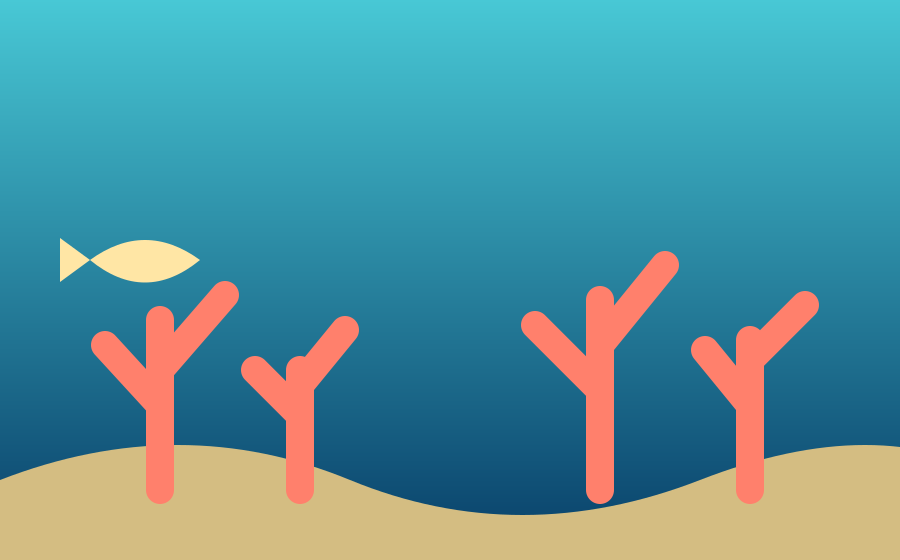

OUR PLANET. OUR BLUE FUTURE.
A healthier ocean starts with us.
The ocean connects every one of us. Explore the challenges facing marine ecosystems—and discover simple ways to make a lasting difference.
Make a difference →Our blue planet needs a little care.
Oceans help regulate our climate, support incredible biodiversity, and provide food and livelihoods for communities around the world. Pollution, warming waters, and habitat loss put these systems under pressure.
Meet the life beneath the waves ↗
A WORLD WORTH PROTECTING
Every habitat has a role to play.
From coral reefs to open water, marine habitats are home to extraordinary species. Protecting these places helps keep ocean ecosystems resilient.
Explore marine life →